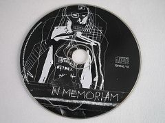
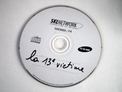

The ICPA is a private association created by friends and colleagues of journalist Jack Lorski in the wake of his murder in Scotland. The ICPA is aimed at helping international police and law departments to bring a swift end to the Phoenix's killing spree.
SKL NETWORK is the agency that Jack Lorski worked for. It decided to go public with the two CD-ROMs received from the Phoenix.
LIBERATION.FR has published several articles on the Phoenix case. Use its search engine to access its archives.
THE CD-ROMS SENT BY THE PHOENIX
By creating two CD-ROMs containing puzzles that deliver clues in dribs and drabs, and by constantly playing at hiding or encrypting the rare information he agrees to give, the Phoenix has shown us that he loves to manipulate people, especially those who are looking for him. The technical performance and graphic skill with which he designed his programs have proven his great intelligence. As David Marcus indicated in his analyses, through his "works," the Phoenix, aware of his genius, seeks a form of recognition, which is a constant among many serial killers..
- The black CD-ROM
On October 8, 2003, more than eight months after the kidnapping of Jack Lorski and Karen Gijman, Arnaud Ivan, president of SKL Network, received at his home an envelope mailed to Bologna (Italy) containing a very strange black CD-ROM apparently designed as a game.
Powerless in the face of this program, which they are unable to decipher, the police and SKL management decide to make it public (Photo 1) in order to increase the chances of finding clues inside that could put them on the trail of the kidnapped and allow them to arrest the kidnapper.
Shortly after this release, many amateur investigators participated in solving the many puzzles contained in the CD-ROM, allowing the Italian police to free Jack and Karen some time later. Unfortunately, they did not obtain enough clues to allow the arrest of the Phoenix.
- The white CD-ROM
On October 2, 2004, Arnaud Ivan received a second envelope in his mailbox, strangely similar to the one he had received a year earlier. This time, it contained a blank CD-ROM. Police analysis proved that this new document was indeed the work of the Phoenix. The first film revealed by this CD-ROM refers to Alex Borgo, a young French journalist who died in February 2004.
As with the black CD-ROM, SKL and Gerd Hanke, the German police officer coordinating the Phoenix investigation at the European level, decided to release it to the general public (Photo 2) in order to speed up its decryption, and like the first time, the private investigators managed to solve the puzzles contained in the CD-ROM one by one. Their research proved that Alex Borgo did not commit suicide but was murdered by the Phoenix because it did not want the journalist to publish the results of his investigation into Manus Domini. Unfortunately, once again, the clues gathered during this investigation were too meager to allow the police to arrest the killer.